This tutorial will focus on the use of Bayesian estimation to fit simple linear regression models …
Keywords
Software, Statistics, Stan
This tutorial will focus on the use of Bayesian estimation to fit simple linear regression models. BUGS (Bayesian inference Using Gibbs Sampling) is an algorithm and supporting language (resembling R) dedicated to performing the Gibbs sampling implementation of Markov Chain Monte Carlo (MCMC) method. Dialects of the BUGS language are implemented within three main projects:
OpenBUGS - written in component pascal.
JAGS - (Just Another Gibbs Sampler) - written in C++.
Stan - a dedicated Bayesian modelling framework written in C++ and implementing Hamiltonian MCMC samplers.
Whilst the above programs can be used stand-alone, they do offer the rich data pre-processing and graphical capabilities of R, and thus, they are best accessed from within R itself. As such there are multiple packages devoted to interfacing with the various software implementations:
R2OpenBUGS - interfaces with OpenBUGS
R2jags - interfaces with JAGS
rstan - interfaces with Stan
This tutorial will demonstrate how to fit models in Stan (Gelman, Lee, and Guo (2015)) using the package rstan (Stan Development Team (2018)) as interface, which also requires to load some other packages.
Overview
Introduction
Factorial designs are an extension of single factor ANOVA designs in which additional factors are added such that each level of one factor is applied to all levels of the other factor(s) and these combinations are replicated. For example, we might design an experiment in which the effects of temperature (high vs low) and fertiliser (added vs not added) on the growth rate of seedlings are investigated by growing seedlings under the different temperature and fertilizer combinations. In addition to investigating the impacts of the main factors, factorial designs allow us to investigate whether the effects of one factor are consistent across levels of another factor. For example, is the effect of temperature on growth rate the same for both fertilised and unfertilized seedlings and similarly, does the impact of fertiliser treatment depend on the temperature under which the seedlings are grown?
Arguably, these interactions give more sophisticated insights into the dynamics of the system we are investigating. Hence, we could add additional main effects, such as soil pH, amount of water, etc, along with all the two way (temp:fert, temp:pH, temp:water, etc), three-way (temp:fert:pH, temp:pH:water), four-way (and so on) interactions in order to explore how these various factors interact with one another to effect the response. However, the more interactions, the more complex the model becomes to specify, compute and interpret - not to mention the rate at which the number of required observations increases. Factorial designs can consist:
entirely of crossed fixed factors (Model I ANOVA - most common) in which conclusions are restricted to the specific combinations of levels selected for the experiment.
entirely of crossed random factors (Model II ANOVA).
a mixture of crossed fixed and random factors (Model III ANOVA).
The latter are useful for investigating the generality of a main treatment effect (fixed) over broad spatial, temporal or clinical levels of organisation. That is whether the observed effects of temperature and/or fertiliser (for example) are observed across the entire genera or country.
Linear model
As with single factor ANOVA, the linear model could be constructed as either effects or means parameterisation, although only effects parameterisation will be considered here. The linear models for two and three factor design are
where \(\mu\) is the overall mean, \(\alpha\) is the effect of Factor A, \(\beta\) is the effect of Factor B, \(\gamma\) is the effect of Factor C and \(\epsilon\) is the random unexplained or residual component. Note that although the linear models for Model I, Model II and Model III designs are identical, the interpretation of terms (and thus null hypothesis) differ. Recall from the tutorial on single factor ANOVA, that categorical variables in linear models are actually re-parameterised dummy codes - and thus the \(\alpha\) term above, actually represents one or more dummy codes. Thus, if we actually had two levels of Factor A (A1 and A2) and three levels of Factor B (B1, B2, B3), then the fully parameterised linear model would be:
Thus, such a model would have six parameters to estimate (in addition to the variance).
Null hypothesis
There are separate null hypothesis associated with each of the main effects and the interaction terms.
Model 1 - fixed effects
Factor A
\(H_0(A):\mu_1=\mu_2=\ldots=\mu_i=\mu\)
The population group means are all equal. The mean of population \(1\) is equal to that of population \(2\) and so on, and thus all population means are equal to an overall mean. If the effect of the \(i\)-th group is the difference between the \(i\)-th group mean and the overall mean (\(\alpha_i=\mu_i-\mu\)) then the \(H_0\) can alternatively be written as:
\(H_0(A):\alpha_1=\alpha_2=\ldots=\alpha_i=0\)
The effect of each group equals zero. If one or more of the \(\alpha_i\) are different from zero (the response mean for this treatment differs from the overall response mean), the null hypothesis is rejected indicating that the treatment has been found to affect the response variable. Note, as with multiple regression models, these “effects” represent partial effects. In the above, the effect of Factor A is actually the effect of Factor A at the first level of the Factor(s).
Factor B
\(H_0(B):\mu_1=\mu_2=\ldots=\mu_i=\mu\)
The population group means are all equal - at the first level of Factor A. Equivalent interpretation to Factor A above.
Factor AB: interaction
\(H_0(AB):\mu_{ij}=\mu_i+\mu_j-\mu\)
The population group means are all equal. For any given combination of factor levels, the population group mean will be equal to the difference between the overall population mean and the simple additive effects of the individual factor group means. That is, the effects of the main treatment factors are purely additive and independent of one another. This is equivalent to \(H_0(AB): \alpha\beta_{ij}=0\), no interaction between Factor A and Factor B.
Model 2 - random effects
Factor A
\(H_0(A):\sigma^2_{\alpha}=0\)
The population variance equals zero. There is no added variance due to all possible levels of A.
Factor B
\(H_0(B):\sigma^2_{\beta}=0\)
The population variance equals zero. There is no added variance due to all possible levels of B.
Factor AB: interaction
\(H_0(AB):\sigma^2_{\alpha\beta}=0\)
There is no added variance due to all possible interactions between all possible levels of A and B.
Model 3 - mixed effects
Fixed factor - e.g. A
\(H_0(A):\mu_1=\mu_2=\ldots=\mu_i=\mu\)
The population group means are all equal. The mean of population \(1\) (pooled over all levels of the random factor) is equal to that of population \(2\) and so on, and thus all population means are equal to an overall mean pooling over all possible levels of the random factor. If the effect of the \(i\)-th group is the difference between the \(i\)-th group mean and the overall mean (\(\alpha_i=\mu_i-\mu\)) then the \(H_0\) can alternatively be written as:
\(H_0(A):\alpha_1=\alpha_2=\ldots=\alpha_i=0\)
No effect of any level of this factor pooled over all possible levels of the random factor.
Random factor - e.g. B
\(H_0(B):\sigma^2_{\beta}=0\)
The population variance equals zero. There is no added variance due to all possible levels of B.
Factor AB: interaction
The interaction of a fixed and random factor is always considered a random factor.
\(H_0(AB):\sigma^2_{\alpha\beta}=0\)
The population variance equals zero. There is no added variance due to all possible interactions between all possible levels of A and B.
Analysis of variance
When fixed factorial designs are balanced, the total variance in the response variable can be sequentially partitioned into what is explained by each of the model terms (factors and their interactions) and what is left unexplained. For each of the specific null hypotheses, the overall unexplained variability is used as the denominator in F-ratio calculations, and when a null hypothesis is true, an F-ratio should follow an F distribution with an expected value less than \(1\). Random factors are added to provide greater generality of conclusions. That is, to enable us to make conclusions about the effect of one factor (such as whether or not fertiliser is added) over all possible levels (not just those sampled) of a random factor (such as all possible locations, seasons, varieties, etc). In order to expand our conclusions beyond the specific levels used in the design, the hypothesis tests (and thus F-ratios) must reflect this extra generality by being more conservative.
The appropriate F-ratios for fixed, random and mixed factorial designs are presented below. Generally, once the terms (factors and interactions) have been ordered into a hierarchy (single factors at the top, highest level interactions at the bottom and terms of same order given equivalent positions in the hierarchy), the denominator for any term is selected as the next appropriate random term (an interaction that includes the term to be tested) encountered lower in the hierarchy. Interaction terms that contain one or more random factors are considered themselves to be random terms, as is the overall residual term (as all observations are assumed to be random representations of the entire population(s)). Note, when designs include a mixture of fixed and random crossed effects, exact denominator degrees of freedoms for certain F-ratios are undefined and traditional approaches adopt rather inexact estimated approximate or “Quasi” F-ratios. Pooling of non-significant F-ratio denominator terms, in which lower random terms are added to the denominator (provided \(\alpha > 0.25\)), may also be useful. For random factors within mixed models, selecting F-ratio denominators that are appropriate for the intended hypothesis tests is a particularly complex and controversial issue. Traditionally, there are two alternative approaches and whilst the statistical resumes of each are complicated, essentially they differ in whether or not the interaction term is constrained for the test of the random factor.
The constrained or restricted method (Model I), stipulates that for the calculation of a random factor F-ratio (which investigates the added variance added due to the random factor), the overall effect of the interaction is treated as zero. Consequently, the random factor is tested against the residual term. The unconstrained or unrestrained method (Model II) however, does not set the interaction effect to zero and therefore the interaction term is used as the random factor F-ratio denominator. This method assumes that the interaction terms for each level of the random factor are completely independent (correlations between the fixed factor must be consistent across all levels of the random factor). Some statisticians maintain that the independence of the interaction term is difficult to assess for clinical data and therefore, the restricted approach is more appropriate. However, others have suggested that the restricted method is only appropriate for balanced designs.
Quasi F-ratios
An additional complication for three or more factor models that contain two or more random factors, is that there may not be a single appropriate interaction term to use as the denominator for many of the main effects F-ratios. For example, if Factors A and B are random and C is fixed, then there are two random interaction terms of equivalent level under Factor C (\(A^\prime \times C\) and \(B^\prime \times C\)). As a result, the value of the of the Mean Squares (MS) expected when the null hypothesis is true cannot be easily defined. The solutions for dealing with such situations (quasi F-ratios) involve adding (and subtracting) terms together to create approximate estimates of F-ratio denominators. Alternatively, for random factors, variance components with confidence intervals can be used. These solutions are sufficiently unsatisfying as to lead many statisticians to recommend that factorial designs with two or more random factors should avoided if possible. Arguably however, linear mixed effects models offer more appropriate solutions to the above issues as they are more robust for unbalanced designs, accommodate covariates and provide a more comprehensive treatment and overview of all the underlying data structures.
fact_anova_table
NA df MS A,B fixed A,B random
NA A "a-1" "MS A" "(MS A)/(MS res)" "(MS A)/(MS AB)"
NA B "b-1" "MS B" "(MS B)/(MS res)" "(MS B)/(MS AB)"
NA AB "(b-1)(a-1)" "MS AB" "(MS AB)/(MS res)" "(MS AB)/(MS AB)"
NA Res "(n-1)ba" "MS res" "" ""
NA A fixed B random (model I) A fixed B random (model II)
NA A "(MS A)/(MS AB)" "(MS A)/(MS AB)"
NA B "(MS B)/(MS res)" "(MS B)/(MS AB)"
NA AB "(MS AB)/(MS res)" "(MS AB)/(MS res)"
NA Res "" ""
The corresponding R syntax is given below.
#Type I SS (Balanced)anova(lm(y ~ A * B, data))#Type II SS (Unbalanced)Anova(lm(y ~ A * B, data), type ="II")#Type III SS (Unbalanced)Anova(lm(y ~ A * B, data), type ="III")#Variance componentssummary(lmer(y ~1+ (1| A) + (1| B) + (1| A:B), data))
Note that for fixed factor models, when null hypotheses of interactions are rejected, the null hypothesis of the individual constituent factors are unlikely to represent the true nature of the effects and thus are of little value. The nature of such interactions are further explored by fitting simpler linear models (containing at least one less factor) separately for each of the levels of the other removed factor(s). Such Main effects tests are based on a subset of the data, and therefore estimates of the overall residual (unexplained) variability are unlikely to be as precise as the estimates based on the global model. Consequently, F-ratios involving MSResid should use the estimate of MSResid from the global model rather than that based on the smaller, theoretically less precise subset of data. For random and mixed models, since the objective is to generalise the effect of one factor over and above any interactions with other factors, the main factor effects can be interpreted even in the presence of significant interactions. Nevertheless, it should be noted that when a significant interaction is present in a mixed model, the power of the main fixed effects will be reduced (since the amount of variability explained by the interaction term will be relatively high, and this term is used as the denominator for the F-ratio calculation).
Assumptions
Hypothesis tests assume that the residuals are:
normally distributed. Boxplots using the appropriate scale of replication (reflecting the appropriate residuals/F-ratio denominator (see table above) should be used to explore normality. Scale transformations are often useful.
equally varied. Boxplots and plots of means against variance (using the appropriate scale of replication) should be used to explore the spread of values. Residual plots should reveal no patterns. Scale transformations are often useful.
independent of one another.
Planned and unplanned comparisons
As with single factor analysis of variance, planned and unplanned multiple comparisons (such as Tukey’s test) can be incorporated into or follow the linear model respectively so as to further investigate any patterns or trends within the main factors and/or the interactions. As with single factor analysis of variance, the contrasts must be defined prior to fitting the linear model, and no more than \(p−1\) (where \(p\) is the number of levels of the factor) contrasts can be defined for a factor.
Unbalanced designs
A factorial design can be thought of as a table made up of rows (representing the levels of one factor), columns (levels of another factor), and cells (the individual combinations of the set of factors). Whilst the middle left table does not have equal sample sizes in each cell, the sample sizes are in proportion and as such, does not present the issues discussed below for unbalanced designs.
In addition to impacting on normality and homogeneity of variance, unequal sample sizes in factorial designs have major implications for the partitioning of the total sums of squares into each of the model components. For balanced designs, the total sums of squares (SSTotal) is equal to the additive sums of squares of each of the components (including the residual). For example, in a two factor balanced design, SSTotal=SSA+SSB+SSAB+SSResid. This can be represented diagrammatically by a Venn Diagram in which each of the SS for the term components butt against one another and are surrounded by the SSResid. However, in unbalanced designs, the sums of squares will be non-orthogonal and the sum of the individual components does not add up to the total sums of squares. Diagrammatically, the SS of the terms intersect or are separated.
In regular sequential sums of squares (Type I SS), the sum of the individual sums of squares must be equal to the total sums of squares, the sums of squares of the last factor to be estimated will be calculated as the difference between the total sums of squares and what has already been accounted for by other components. Consequently, the order in which factors are specified in the model (and thus estimated) will alter their sums of squares and therefore their F-ratios. To overcome this problem, traditionally there are two other alternative methods of calculating sums of squares.
Type II (hierarchical) SS estimate the sums of squares of each term as the improvement it contributes upon addition of that term to a model of greater complexity and lower in the hierarchy (recall that the hierarchical structure descends from the simplest model down to the fully populated model). The SS for the interaction as well as the first factor to be estimated are the same as for Type I SS. Type II SS estimate the contribution of a factor over and above the contributions of other factors of equal or lower complexity but not above the contributions of the interaction terms or terms nested within the factor. However, these sums of squares are weighted by the sample sizes of each level and therefore are biased towards the trends produced by the groups (levels) that have higher sample sizes. As a result of the weightings, Type II SS actually test hypotheses about really quite complex combinations of factor levels. Rather than test a hypothesis that \(\mu_{High}=\mu_{Medium}=\mu_{Low}\), Type II SS might be testing that \(4\times\mu_{High}=1\times\mu_{Medium}=0.25\times\mu_{Low}\).
Type III (marginal or orthogonal) SS estimate the sums of squares of each term as the improvement based on a comparison of models with and without the term and are unweighted by sample sizes. Type III SS essentially measure just the unique contribution of each factor over and above the contributions of the other factors and interactions. For unbalanced designs,Type III SS essentially test equivalent hypotheses to balanced Type I SS and are therefore arguably more appropriate for unbalanced factorial designs than Type II SS. Importantly, Type III SS are only interpretable if they are based on orthogonal contrasts (such as sum or helmert contrasts and not treatment contrasts).
The choice between Type II and III SS clearly depends on the nature of the question. For example, if we had measured the growth rate of seedlings subjected to two factors (temperature and fertiliser), Type II SS could address whether there was an effect of temperature across the level of fertiliser treatment, whereas Type III SS could assess whether there was an effect of temperature within each level of the fertiliser treatment.
When an entire combination, or cell, is missing (perhaps due to unforeseen circumstances) it is not possible to test all the main effects and/or interactions. The bottom right table above depicts such as situation. One solution is to fit a large single factor ANOVA with as many levels as there are cells (this is known as a cell means model) and investigate various factor and interaction effects via specific contrasts (see the following tables). Difficulties in establishing appropriate error terms, makes missing cells in random and mixed factor designs substantially more complex.
Data generation
Imagine we has designed an experiment in which we had measured the response (\(y\)) under a combination of two different potential influences (Factor A: levels a1 and a2; and Factor B: levels b1, b2 and b3), each combination replicated \(10\) times (\(n=10\)). As this section is mainly about the generation of artificial data (and not specifically about what to do with the data), understanding the actual details are optional and can be safely skipped.
set.seed(123)nA <-2#number of levels of AnB <-3#number of levels of Bnsample <-10#number of reps in eachA <-gl(nA, 1, nA, lab =paste("a", 1:nA, sep =""))B <-gl(nB, 1, nB, lab =paste("b", 1:nB, sep =""))data <-expand.grid(A = A, B = B, n =1:nsample)X <-model.matrix(~A * B, data = data)eff <-c(40, 15, 5, 0, -15, 10)sigma <-3#residual standard deviationn <-nrow(data)eps <-rnorm(n, 0, sigma) #residualsdata$y <-as.numeric(X %*% eff + eps)head(data) #print out the first six rows of the data set
NA A B n y
NA 1 a1 b1 1 38.31857
NA 2 a2 b1 1 54.30947
NA 3 a1 b2 1 49.67612
NA 4 a2 b2 1 45.21153
NA 5 a1 b3 1 40.38786
NA 6 a2 b3 1 70.14519
with(data, interaction.plot(A, B, y))
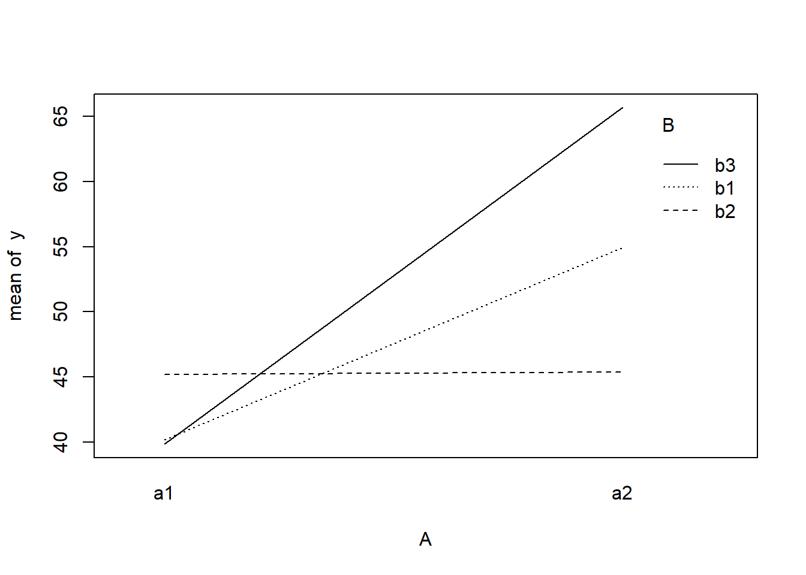
## ALTERNATIVELY, we could supply the population means and get the effect parameters from these. To## correspond to the model matrix, enter the population means in the order of: a1b1, a2b1, a1b1,## a2b2,a1b3,a2b3pop.means <-as.matrix(c(40, 55, 45, 45, 40, 65), byrow = F)## Generate a minimum model matrix for the effectsXX <-model.matrix(~A * B, expand.grid(A =factor(1:2), B =factor(1:3)))## Use the solve() function to solve what are effectively simultaneous equations(eff <-as.vector(solve(XX, pop.means)))
NA [1] 40 15 5 0 -15 10
data$y <-as.numeric(X %*% eff + eps)
With these sort of data, we are primarily interested in investigating whether there is a relationship between the continuous response variable and the treatment type. Does treatment type effect the response?.
Assumptions
The assumptions are:
All of the observations are independent - this must be addressed at the design and collection stages. Importantly, to be considered independent replicates, the replicates must be made at the same scale at which the treatment is applied. For example, if the experiment involves subjecting organisms housed in tanks to different water temperatures, then the unit of replication is the individual tanks not the individual organisms in the tanks. The individuals in a tank are strictly not independent with respect to the treatment.
The response variable (and thus the residuals) should be normally distributed for each sampled populations (combination of factors). Boxplots of each treatment combination are useful for diagnosing major issues with normality.
The response variable should be equally varied (variance should not be related to mean as these are supposed to be estimated separately) for each combination of treatments. Again, boxplots are useful.
Exploratory data analysis
Normality and Homogeneity of variance
boxplot(y ~ A * B, data)# OR via ggplot2library(ggplot2)
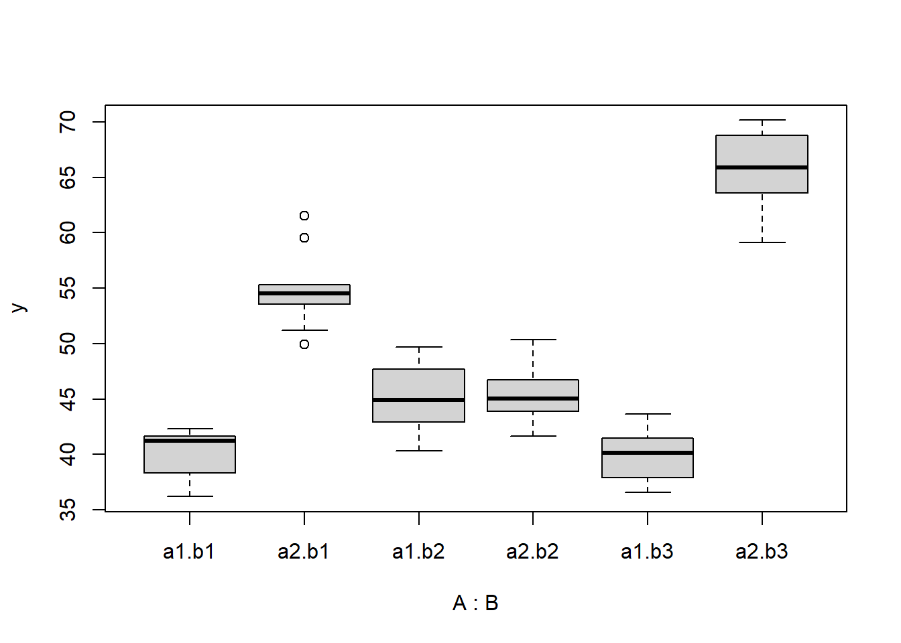
ggplot(data, aes(y = y, x = A, fill = B)) +geom_boxplot()
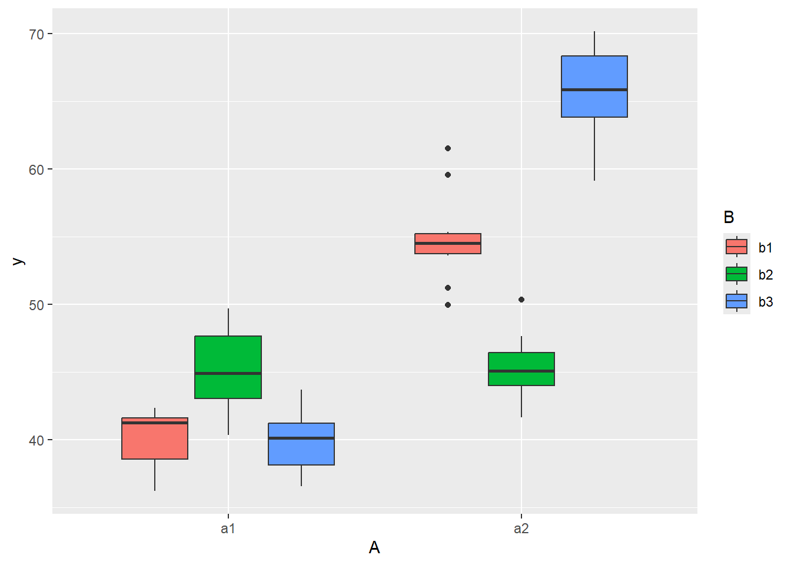
Conclusions
there is no evidence that the response variable is consistently non-normal across all populations - each boxplot is approximately symmetrical. There is no evidence that variance (as estimated by the height of the boxplots) differs between the five populations. More importantly, there is no evidence of a relationship between mean and variance - the height of boxplots does not increase with increasing position along the \(y\)-axis. Hence it there is no evidence of non-homogeneity
Obvious violations could be addressed either by:
transform the scale of the response variables (to address normality etc). Note transformations should be applied to the entire response variable (not just those populations that are skewed).
Model fitting
The observed response (\(y_i\)) are assumed to be drawn from a normal distribution with a given mean (\(\mu\)) and standard deviation (\(\sigma\)). The expected values are themselves determined by the linear predictor (\(\boldsymbol X \boldsymbol \beta\)). In this case, \(\boldsymbol \beta\) represents the intercept associated with the first combination of groups, as well as the (effects) differences between this intercept and each other group. \(\boldsymbol X\) is the model matrix. MCMC sampling requires priors on all parameters. We will employ weakly informative priors. Specifying ‘uninformative’ priors is always a bit of a balancing act. If the priors are too vague (wide) the MCMC sampler can wander off into nonscence areas of likelihood rather than concentrate around areas of highest likelihood (desired when wanting the outcomes to be largely driven by the data). On the other hand, if the priors are too strong, they may have an influence on the parameters. In such a simple model, this balance is very forgiving - it is for more complex models that prior choice becomes more important. For this simple model, we will go with zero-centered Gaussian (normal) priors with relatively large standard deviations (\(100\)) for both the intercept and the treatment effect and a wide half-cauchy (\(\text{scale}=5\)) for the standard deviation.
\[
y_i \sim N(\mu_i,\sigma),
\]
where \(\mu_i=\beta_0 +\boldsymbol \beta \boldsymbol X\). The assumed priors are: \(\beta \sim N(0,100)\) and \(\sigma \sim \text{Cauchy}(0,5)\). Exploratory data analysis suggests that the intercept and effects could be drawn from similar distributions (with mean in the \(10\)’s and variances in the \(100\)’s). Whilst we might therefore be tempted to provide different priors for the intercept, compared to the effects, for a simple model such as this, it is unlikely to be necessary. However, for more complex models, where prior specification becomes more critical, separate priors would probably be necessary. We proceed to code the model into Stan.
modelString =" data { int<lower=1> n; int<lower=1> nX; vector [n] y; matrix [n,nX] X; } parameters { vector[nX] beta; real<lower=0> sigma; } transformed parameters { vector[n] mu; mu = X*beta; } model { // Likelihood y~normal(mu,sigma); // Priors beta ~ normal(0,100); sigma~cauchy(0,5); } generated quantities { vector[n] log_lik; for (i in 1:n) { log_lik[i] = normal_lpdf(y[i] | mu[i], sigma); } } "## write the model to a stan file writeLines(modelString, con ="fact_anovaModel.stan")
Arrange the data as a list (as required by Stan). As input, Stan will need to be supplied with: the response variable, the predictor variable, the total number of observed items. This all needs to be contained within a list object. We will create two data lists, one for each of the hypotheses.
Xmat <-model.matrix(~A * B, data)data.list <-with(data, list(y = y, X = Xmat, nX =ncol(Xmat), n =nrow(data)))
Define the nodes (parameters and derivatives) to monitor and chain parameters.
Now compile and run the Stan code via the rstan interface. Note that the first time stan is run after the rstan package is loaded, it is often necessary to run any kind of randomization function just to initiate the .Random.seed variable.
library(rstan)
During the warmup stage, the No-U-Turn sampler (NUTS) attempts to determine the optimum stepsize - the stepsize that achieves the target acceptance rate (\(0.8\) or \(80\)% by default) without divergence (occurs when the stepsize is too large relative to the curvature of the log posterior and results in approximations that are likely to diverge and be biased) - and without hitting the maximum treedepth (\(10\)). At each iteration of the NUTS algorithm, the number of leapfrog steps doubles (as it increases the treedepth) and only terminates when either the NUTS criterion are satisfied or the tree depth reaches the maximum (\(10\) by default).
NA
NA SAMPLING FOR MODEL 'anon_model' NOW (CHAIN 1).
NA Chain 1:
NA Chain 1: Gradient evaluation took 3e-05 seconds
NA Chain 1: 1000 transitions using 10 leapfrog steps per transition would take 0.3 seconds.
NA Chain 1: Adjust your expectations accordingly!
NA Chain 1:
NA Chain 1:
NA Chain 1: Iteration: 1 / 1500 [ 0%] (Warmup)
NA Chain 1: Iteration: 150 / 1500 [ 10%] (Warmup)
NA Chain 1: Iteration: 300 / 1500 [ 20%] (Warmup)
NA Chain 1: Iteration: 450 / 1500 [ 30%] (Warmup)
NA Chain 1: Iteration: 501 / 1500 [ 33%] (Sampling)
NA Chain 1: Iteration: 650 / 1500 [ 43%] (Sampling)
NA Chain 1: Iteration: 800 / 1500 [ 53%] (Sampling)
NA Chain 1: Iteration: 950 / 1500 [ 63%] (Sampling)
NA Chain 1: Iteration: 1100 / 1500 [ 73%] (Sampling)
NA Chain 1: Iteration: 1250 / 1500 [ 83%] (Sampling)
NA Chain 1: Iteration: 1400 / 1500 [ 93%] (Sampling)
NA Chain 1: Iteration: 1500 / 1500 [100%] (Sampling)
NA Chain 1:
NA Chain 1: Elapsed Time: 0.041 seconds (Warm-up)
NA Chain 1: 0.058 seconds (Sampling)
NA Chain 1: 0.099 seconds (Total)
NA Chain 1:
NA
NA SAMPLING FOR MODEL 'anon_model' NOW (CHAIN 2).
NA Chain 2:
NA Chain 2: Gradient evaluation took 5e-06 seconds
NA Chain 2: 1000 transitions using 10 leapfrog steps per transition would take 0.05 seconds.
NA Chain 2: Adjust your expectations accordingly!
NA Chain 2:
NA Chain 2:
NA Chain 2: Iteration: 1 / 1500 [ 0%] (Warmup)
NA Chain 2: Iteration: 150 / 1500 [ 10%] (Warmup)
NA Chain 2: Iteration: 300 / 1500 [ 20%] (Warmup)
NA Chain 2: Iteration: 450 / 1500 [ 30%] (Warmup)
NA Chain 2: Iteration: 501 / 1500 [ 33%] (Sampling)
NA Chain 2: Iteration: 650 / 1500 [ 43%] (Sampling)
NA Chain 2: Iteration: 800 / 1500 [ 53%] (Sampling)
NA Chain 2: Iteration: 950 / 1500 [ 63%] (Sampling)
NA Chain 2: Iteration: 1100 / 1500 [ 73%] (Sampling)
NA Chain 2: Iteration: 1250 / 1500 [ 83%] (Sampling)
NA Chain 2: Iteration: 1400 / 1500 [ 93%] (Sampling)
NA Chain 2: Iteration: 1500 / 1500 [100%] (Sampling)
NA Chain 2:
NA Chain 2: Elapsed Time: 0.038 seconds (Warm-up)
NA Chain 2: 0.064 seconds (Sampling)
NA Chain 2: 0.102 seconds (Total)
NA Chain 2:
print(data.rstan, par =c("beta", "sigma"))
NA Inference for Stan model: anon_model.
NA 2 chains, each with iter=1500; warmup=500; thin=1;
NA post-warmup draws per chain=1000, total post-warmup draws=2000.
NA
NA mean se_mean sd 2.5% 25% 50% 75% 97.5% n_eff Rhat
NA beta[1] 40.09 0.03 0.93 38.18 39.47 40.10 40.70 41.92 735 1
NA beta[2] 14.84 0.05 1.33 12.21 13.99 14.86 15.72 17.41 725 1
NA beta[3] 5.07 0.04 1.29 2.60 4.22 5.06 5.89 7.57 874 1
NA beta[4] -0.23 0.05 1.30 -2.82 -1.09 -0.22 0.67 2.42 814 1
NA beta[5] -14.61 0.07 1.92 -18.61 -15.81 -14.65 -13.32 -10.78 870 1
NA beta[6] 10.96 0.07 1.86 7.33 9.78 10.99 12.19 14.66 797 1
NA sigma 2.89 0.01 0.29 2.41 2.68 2.86 3.08 3.51 1395 1
NA
NA Samples were drawn using NUTS(diag_e) at Mon Jul 22 12:31:59 2024.
NA For each parameter, n_eff is a crude measure of effective sample size,
NA and Rhat is the potential scale reduction factor on split chains (at
NA convergence, Rhat=1).
MCMC diagnostics
In addition to the regular model diagnostic checks (such as residual plots), for Bayesian analyses, it is necessary to explore the characteristics of the MCMC chains and the sampler in general. Recall that the purpose of MCMC sampling is to replicate the posterior distribution of the model likelihood and priors by drawing a known number of samples from this posterior (thereby formulating a probability distribution). This is only reliable if the MCMC samples accurately reflect the posterior. Unfortunately, since we only know the posterior in the most trivial of circumstances, it is necessary to rely on indirect measures of how accurately the MCMC samples are likely to reflect the likelihood. I will briefly outline the most important diagnostics.
Traceplots for each parameter illustrate the MCMC sample values after each successive iteration along the chain. Bad chain mixing (characterised by any sort of pattern) suggests that the MCMC sampling chains may not have completely traversed all features of the posterior distribution and that more iterations are required to ensure the distribution has been accurately represented.
Autocorrelation plot for each parameter illustrate the degree of correlation between MCMC samples separated by different lags. For example, a lag of \(0\) represents the degree of correlation between each MCMC sample and itself (obviously this will be a correlation of \(1\)). A lag of \(1\) represents the degree of correlation between each MCMC sample and the next sample along the chain and so on. In order to be able to generate unbiased estimates of parameters, the MCMC samples should be independent (uncorrelated).
Potential scale reduction factor (Rhat) statistic for each parameter provides a measure of sampling efficiency/effectiveness. Ideally, all values should be less than \(1.05\). If there are values of \(1.05\) or greater it suggests that the sampler was not very efficient or effective. Not only does this mean that the sampler was potentially slower than it could have been but, more importantly, it could indicate that the sampler spent time sampling in a region of the likelihood that is less informative. Such a situation can arise from either a misspecified model or overly vague priors that permit sampling in otherwise nonscence parameter space.
Prior to examining the summaries, we should have explored the convergence diagnostics. We use the package mcmcplots to obtain density and trace plots.
These plots show no evidence that the chains have not reasonably traversed the entire multidimensional parameter space.
#Raftery diagnosticraftery.diag(mcmc)
NA $`1`
NA
NA Quantile (q) = 0.025
NA Accuracy (r) = +/- 0.005
NA Probability (s) = 0.95
NA
NA You need a sample size of at least 3746 with these values of q, r and s
NA
NA $`2`
NA
NA Quantile (q) = 0.025
NA Accuracy (r) = +/- 0.005
NA Probability (s) = 0.95
NA
NA You need a sample size of at least 3746 with these values of q, r and s
The Raftery diagnostics for each chain estimate that we would require no more than \(5000\) samples to reach the specified level of confidence in convergence. As we have \(10500\) samples, we can be confidence that convergence has occurred.
#Autocorrelation diagnosticstan_ac(data.rstan, pars =c("beta"))
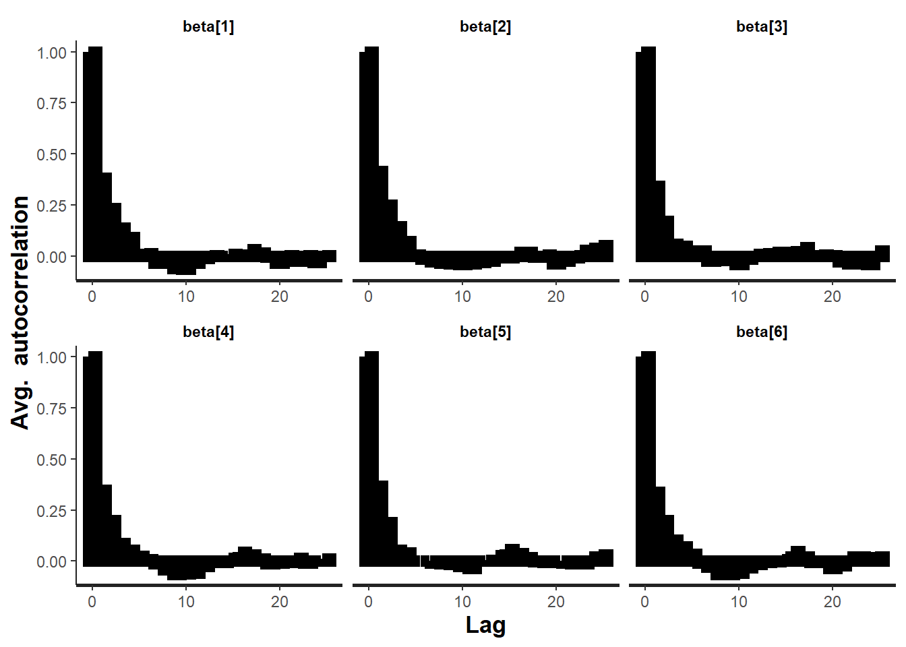
A lag of 10 appears to be sufficient to avoid autocorrelation (poor mixing).
stan_rhat(data.rstan, pars =c("beta"))
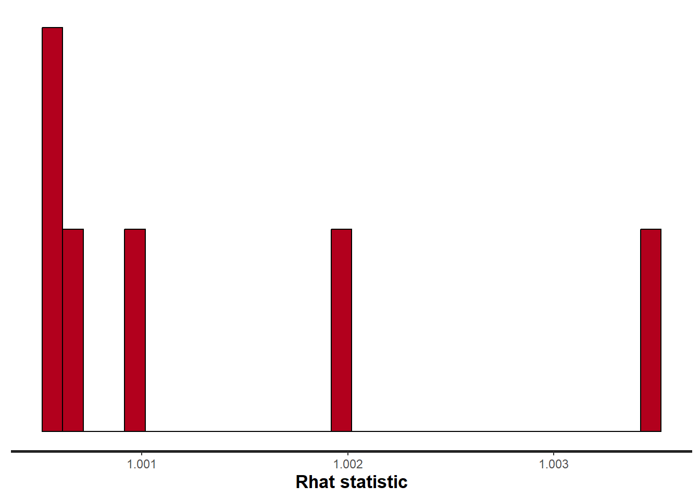
stan_ess(data.rstan, pars =c("beta"))
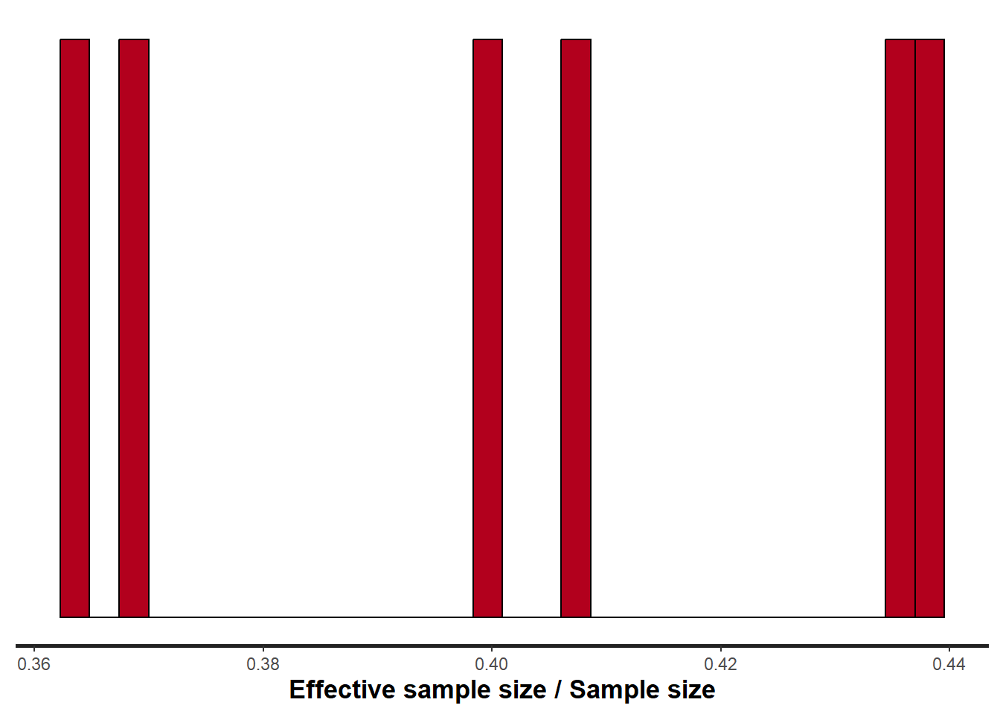
Rhat and effective sample size. In this instance, most of the parameters have reasonably high effective samples and thus there is likely to be a good range of values from which to estimate paramter properties.
Model validation
Model validation involves exploring the model diagnostics and fit to ensure that the model is broadly appropriate for the data. As such, exploration of the residuals should be routine. Ideally, a good model should also be able to predict the data used to fit the model. Residuals are not computed directly within rstan However, we can calculate them manually form the posteriors.
mcmc =as.matrix(data.rstan)# generate a model matrixnewdata = dataXmat =model.matrix(~A * B, newdata)## get median parameter estimateswch =grep("beta\\[", colnames(mcmc))coefs =apply(mcmc[, wch], 2, median)fit =as.vector(coefs %*%t(Xmat))resid = data$y - fitggplot() +geom_point(data =NULL, aes(y = resid, x = fit)) +theme_classic()
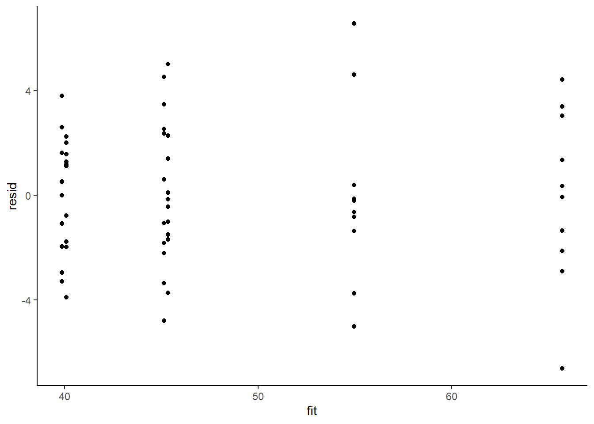
Residuals against predictors
library(dplyr)library(tidyr)mcmc =as.matrix(data.rstan)wch =grep("beta\\[", colnames(mcmc))# generate a model matrixnewdata = newdataXmat =model.matrix(~A * B, newdata)## get median parameter estimatescoefs =apply(mcmc[, wch], 2, median)print(coefs)
NA beta[1] beta[2] beta[3] beta[4] beta[5] beta[6]
NA 40.0971416 14.8555897 5.0550001 -0.2195919 -14.6457707 10.9903162
fit =as.vector(coefs %*%t(Xmat))resid = data$y - fitnewdata = newdata %>%cbind(fit, resid)ggplot(newdata) +geom_point(aes(y = resid, x = A)) +theme_classic()
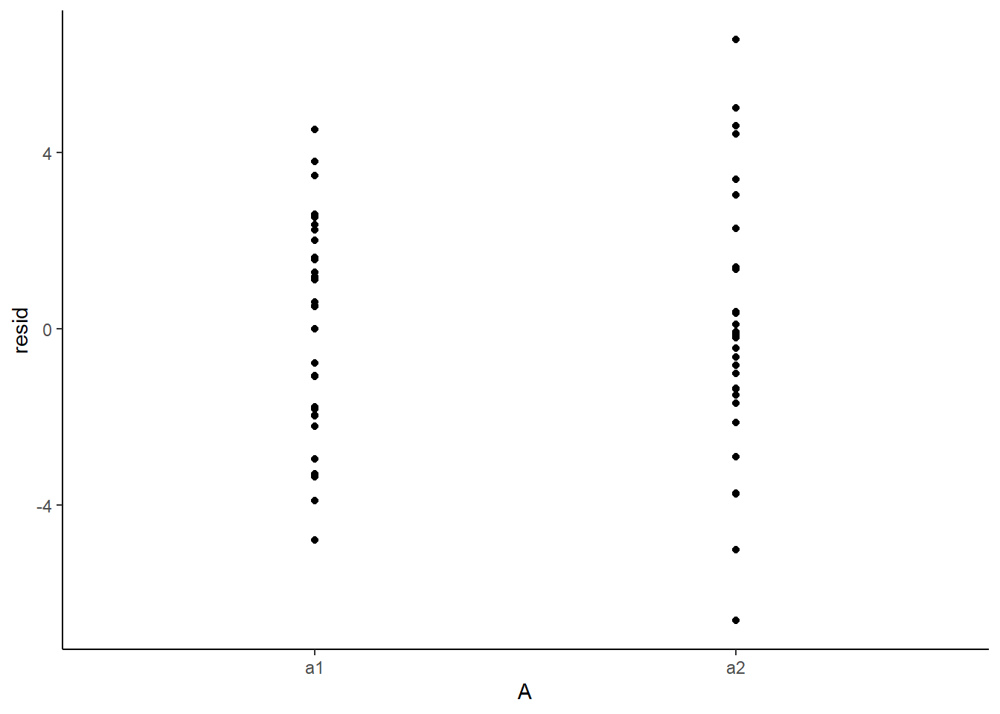
ggplot(newdata) +geom_point(aes(y = resid, x = B)) +theme_classic()
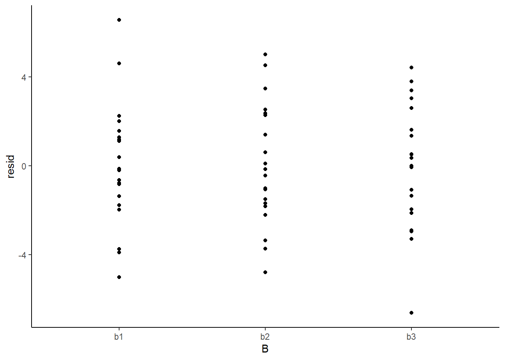
And now for studentised residuals
mcmc =as.matrix(data.rstan)wch =grep("beta\\[", colnames(mcmc))# generate a model matrixnewdata = dataXmat =model.matrix(~A * B, newdata)## get median parameter estimatescoefs =apply(mcmc[, wch], 2, median)fit =as.vector(coefs %*%t(Xmat))resid = data$y - fitsresid = resid/sd(resid)ggplot() +geom_point(data =NULL, aes(y = sresid, x = fit)) +theme_classic()
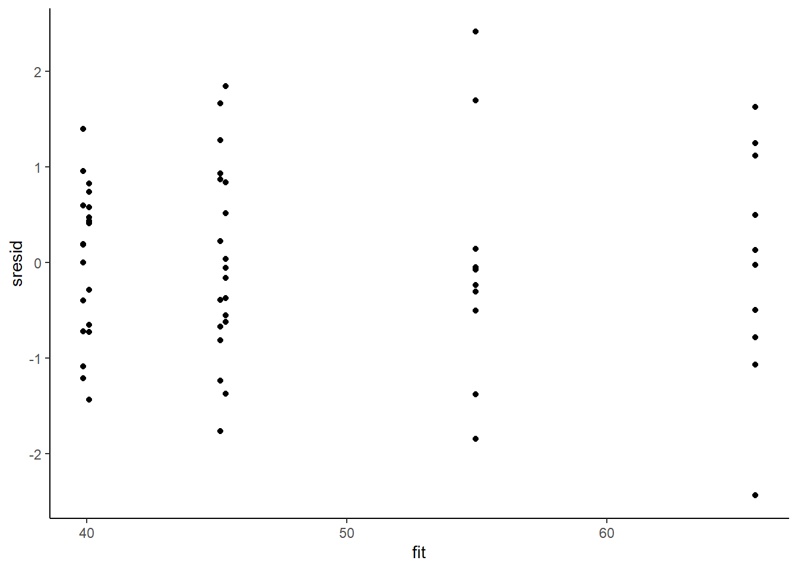
For this simple model, the studentized residuals yield the same pattern as the raw residuals (or the Pearson residuals for that matter). Lets see how well data simulated from the model reflects the raw data.
mcmc =as.matrix(data.rstan)wch =grep("beta\\[", colnames(mcmc))#generate a model matrixXmat =model.matrix(~A*B, data)##get median parameter estimatescoefs = mcmc[,wch]fit = coefs %*%t(Xmat)## draw samples from this modelyRep =sapply(1:nrow(mcmc), function(i) rnorm(nrow(data), fit[i,], mcmc[i, 'sigma']))newdata =data.frame(A=data$A, B=data$B, yRep) %>%gather(key=Sample, value=Value,-A,-B)ggplot(newdata) +geom_violin(aes(y=Value, x=A, fill='Model'), alpha=0.5)+geom_violin(data=data, aes(y=y,x=A,fill='Obs'), alpha=0.5) +geom_point(data=data, aes(y=y, x=A), position=position_jitter(width=0.1,height=0),color='black') +theme_classic()
The predicted trends do encapsulate the actual data, suggesting that the model is a reasonable representation of the underlying processes. Note, these are prediction intervals rather than confidence intervals as we are seeking intervals within which we can predict individual observations rather than means. We can also explore the posteriors of each parameter.
Although all parameters in a Bayesian analysis are considered random and are considered a distribution, rarely would it be useful to present tables of all the samples from each distribution. On the other hand, plots of the posterior distributions have some use. Nevertheless, most workers prefer to present simple statistical summaries of the posteriors. Popular choices include the median (or mean) and \(95\)% credibility intervals.
mcmcpvalue <-function(samp) {## elementary version that creates an empirical p-value for the## hypothesis that the columns of samp have mean zero versus a general## multivariate distribution with elliptical contours.## differences from the mean standardized by the observed## variance-covariance factor## Note, I put in the bit for single termsif (length(dim(samp)) ==0) { std <-backsolve(chol(var(samp)), cbind(0, t(samp)) -mean(samp),transpose =TRUE) sqdist <-colSums(std * std)sum(sqdist[-1] > sqdist[1])/length(samp) } else { std <-backsolve(chol(var(samp)), cbind(0, t(samp)) -colMeans(samp),transpose =TRUE) sqdist <-colSums(std * std)sum(sqdist[-1] > sqdist[1])/nrow(samp) }}
First, we look at the results from the additive model.
print(data.rstan, pars =c("beta", "sigma"))
NA Inference for Stan model: anon_model.
NA 2 chains, each with iter=1500; warmup=500; thin=1;
NA post-warmup draws per chain=1000, total post-warmup draws=2000.
NA
NA mean se_mean sd 2.5% 25% 50% 75% 97.5% n_eff Rhat
NA beta[1] 40.09 0.03 0.93 38.18 39.47 40.10 40.70 41.92 735 1
NA beta[2] 14.84 0.05 1.33 12.21 13.99 14.86 15.72 17.41 725 1
NA beta[3] 5.07 0.04 1.29 2.60 4.22 5.06 5.89 7.57 874 1
NA beta[4] -0.23 0.05 1.30 -2.82 -1.09 -0.22 0.67 2.42 814 1
NA beta[5] -14.61 0.07 1.92 -18.61 -15.81 -14.65 -13.32 -10.78 870 1
NA beta[6] 10.96 0.07 1.86 7.33 9.78 10.99 12.19 14.66 797 1
NA sigma 2.89 0.01 0.29 2.41 2.68 2.86 3.08 3.51 1395 1
NA
NA Samples were drawn using NUTS(diag_e) at Mon Jul 22 12:31:59 2024.
NA For each parameter, n_eff is a crude measure of effective sample size,
NA and Rhat is the potential scale reduction factor on split chains (at
NA convergence, Rhat=1).
# ORlibrary(broom)library(broom.mixed)tidyMCMC(data.rstan, conf.int =TRUE, conf.method ="HPDinterval", pars =c("beta", "sigma"))
NA # A tibble: 7 × 5
NA term estimate std.error conf.low conf.high
NA <chr> <dbl> <dbl> <dbl> <dbl>
NA 1 beta[1] 40.1 0.931 38.3 42.0
NA 2 beta[2] 14.8 1.33 12.2 17.4
NA 3 beta[3] 5.07 1.29 2.59 7.57
NA 4 beta[4] -0.227 1.30 -3.01 2.15
NA 5 beta[5] -14.6 1.92 -18.3 -10.6
NA 6 beta[6] 11.0 1.86 7.19 14.5
NA 7 sigma 2.89 0.288 2.37 3.45
Conclusions
The intercept represents the mean of the first combination Aa1:Bb1 is \(40.2\)
Aa2:Bb1 is \(14.7\) units greater than Aa1:Bb1
Aa1:Bb2 is \(5\) units greater Aa1:Bb1
Aa1:Bb3 is \(-0.335\) units greater Aa1:Bb1
Aa2:Bb2 is \(-14.6\) units greater than the difference between (Aa1:Bb2 + Aa2:Bb1) and (2*Aa1:Bb1)
Aa2:Bb3 is \(11.1\) units greater than the difference between (Aa1:Bb3 + Aa2:Bb1) and (2*Aa1:Bb1)
The \(95\)% credibility interval for both interactive effects (Aa2:Bb2 and Aa2:Bb3) do not contain \(0\), implying significant interactions between A and B. While workers attempt to become comfortable with a new statistical framework, it is only natural that they like to evaluate and comprehend new structures and output alongside more familiar concepts. One way to facilitate this is via Bayesian p-values that are somewhat analogous to the frequentist p-values for investigating the hypothesis that a parameter is equal to zero.
## since values are less than zeromcmcpvalue(as.matrix(data.rstan)[, "beta[2]"])
There is evidence of an interaction between A and B. In a Bayesian context, we can compare models using the leave-one-out cross-validation statistics. Leave-one-out (LOO) cross-validation explores how well a series of models can predict withheld values Vehtari, Gelman, and Gabry (2017). The LOO Information Criterion (LOOIC) is analogous to the AIC except that the LOOIC takes priors into consideration, does not assume that the posterior distribution is drawn from a multivariate normal and integrates over parameter uncertainty so as to yield a distribution of looic rather than just a point estimate. The LOOIC does however assume that all observations are equally influential (it does not matter which observations are left out). This assumption can be examined via the Pareto \(k\) estimate (values greater than \(0.5\) or more conservatively \(0.75\) are considered overly influential). We can compute LOOIC if we store the loglikelihood from our Stan model, which can then be extracted to compute the information criterion using the package loo.
NA
NA Computed from 2000 by 60 log-likelihood matrix.
NA
NA Estimate SE
NA elpd_loo -151.8 5.2
NA p_loo 6.4 1.1
NA looic 303.6 10.4
NA ------
NA MCSE of elpd_loo is 0.1.
NA MCSE and ESS estimates assume independent draws (r_eff=1).
NA
NA All Pareto k estimates are good (k < 0.7).
NA See help('pareto-k-diagnostic') for details.
# now fit a model without main factormodelString2 =" data { int<lower=1> n; int<lower=1> nX; vector [n] y; matrix [n,nX] X; } parameters { vector[nX] beta; real<lower=0> sigma; } transformed parameters { vector[n] mu; mu = X*beta; } model { // Likelihood y~normal(mu,sigma); // Priors beta ~ normal(0,1000); sigma~cauchy(0,5); } generated quantities { vector[n] log_lik; for (i in 1:n) { log_lik[i] = normal_lpdf(y[i] | mu[i], sigma); } } "## write the model to a stan file writeLines(modelString2, con ="fact_anovaModel2.stan")Xmat <-model.matrix(~A + B, data)data.list <-with(data, list(y = y, X = Xmat, n =nrow(data), nX =ncol(Xmat)))data.rstan.red <-stan(data = data.list, file ="fact_anovaModel2.stan", chains = nChains,iter = nIter, warmup = burnInSteps, thin = thinSteps)
NA
NA SAMPLING FOR MODEL 'anon_model' NOW (CHAIN 1).
NA Chain 1:
NA Chain 1: Gradient evaluation took 3.1e-05 seconds
NA Chain 1: 1000 transitions using 10 leapfrog steps per transition would take 0.31 seconds.
NA Chain 1: Adjust your expectations accordingly!
NA Chain 1:
NA Chain 1:
NA Chain 1: Iteration: 1 / 1500 [ 0%] (Warmup)
NA Chain 1: Iteration: 150 / 1500 [ 10%] (Warmup)
NA Chain 1: Iteration: 300 / 1500 [ 20%] (Warmup)
NA Chain 1: Iteration: 450 / 1500 [ 30%] (Warmup)
NA Chain 1: Iteration: 501 / 1500 [ 33%] (Sampling)
NA Chain 1: Iteration: 650 / 1500 [ 43%] (Sampling)
NA Chain 1: Iteration: 800 / 1500 [ 53%] (Sampling)
NA Chain 1: Iteration: 950 / 1500 [ 63%] (Sampling)
NA Chain 1: Iteration: 1100 / 1500 [ 73%] (Sampling)
NA Chain 1: Iteration: 1250 / 1500 [ 83%] (Sampling)
NA Chain 1: Iteration: 1400 / 1500 [ 93%] (Sampling)
NA Chain 1: Iteration: 1500 / 1500 [100%] (Sampling)
NA Chain 1:
NA Chain 1: Elapsed Time: 0.032 seconds (Warm-up)
NA Chain 1: 0.037 seconds (Sampling)
NA Chain 1: 0.069 seconds (Total)
NA Chain 1:
NA
NA SAMPLING FOR MODEL 'anon_model' NOW (CHAIN 2).
NA Chain 2:
NA Chain 2: Gradient evaluation took 6e-06 seconds
NA Chain 2: 1000 transitions using 10 leapfrog steps per transition would take 0.06 seconds.
NA Chain 2: Adjust your expectations accordingly!
NA Chain 2:
NA Chain 2:
NA Chain 2: Iteration: 1 / 1500 [ 0%] (Warmup)
NA Chain 2: Iteration: 150 / 1500 [ 10%] (Warmup)
NA Chain 2: Iteration: 300 / 1500 [ 20%] (Warmup)
NA Chain 2: Iteration: 450 / 1500 [ 30%] (Warmup)
NA Chain 2: Iteration: 501 / 1500 [ 33%] (Sampling)
NA Chain 2: Iteration: 650 / 1500 [ 43%] (Sampling)
NA Chain 2: Iteration: 800 / 1500 [ 53%] (Sampling)
NA Chain 2: Iteration: 950 / 1500 [ 63%] (Sampling)
NA Chain 2: Iteration: 1100 / 1500 [ 73%] (Sampling)
NA Chain 2: Iteration: 1250 / 1500 [ 83%] (Sampling)
NA Chain 2: Iteration: 1400 / 1500 [ 93%] (Sampling)
NA Chain 2: Iteration: 1500 / 1500 [100%] (Sampling)
NA Chain 2:
NA Chain 2: Elapsed Time: 0.033 seconds (Warm-up)
NA Chain 2: 0.037 seconds (Sampling)
NA Chain 2: 0.07 seconds (Total)
NA Chain 2:
(reduced =loo(extract_log_lik(data.rstan.red)))
NA
NA Computed from 2000 by 60 log-likelihood matrix.
NA
NA Estimate SE
NA elpd_loo -196.8 3.9
NA p_loo 4.6 0.6
NA looic 393.6 7.8
NA ------
NA MCSE of elpd_loo is 0.1.
NA MCSE and ESS estimates assume independent draws (r_eff=1).
NA
NA All Pareto k estimates are good (k < 0.7).
NA See help('pareto-k-diagnostic') for details.
par(mfrow =1:2, mar =c(5, 3.8, 1, 0) +0.1, las =3)plot(full, label_points =TRUE)plot(reduced, label_points =TRUE)
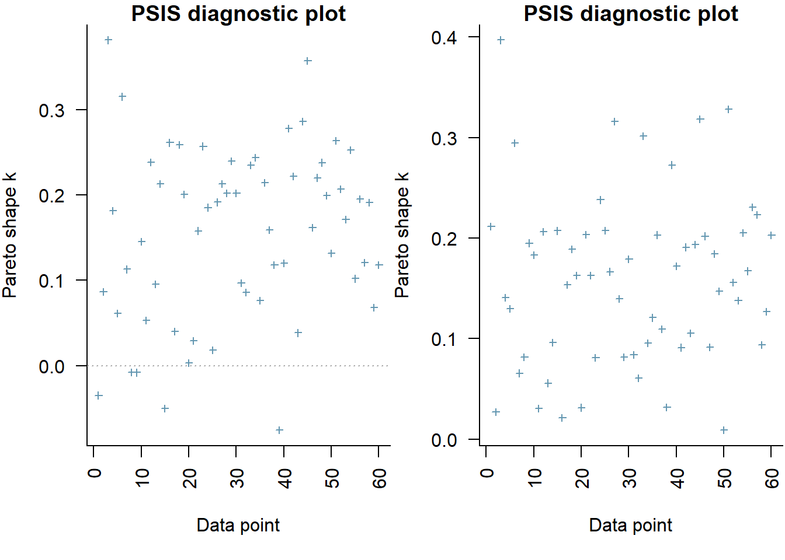
the expected out-of-sample predictive accuracy is substantially lower for the model that includes the interaction (full model).
Graphical summaries
A nice graphic is often a great accompaniment to a statistical analysis. Although there are no fixed assumptions associated with graphing (in contrast to statistical analyses), we often want the graphical summaries to reflect the associated statistical analyses. After all, the sample is just one perspective on the population(s). What we are more interested in is being able to estimate and depict likely population parameters/trends. Thus, whilst we could easily provide a plot displaying the raw data along with simple measures of location and spread, arguably, we should use estimates that reflect the fitted model. In this case, it would be appropriate to plot the credibility interval associated with each group.
Variance components, the amount of added variance attributed to each influence, are traditionally estimated for so called random effects. These are the effects for which the levels employed in the design are randomly selected to represent a broader range of possible levels. For such effects, effect sizes (differences between each level and a reference level) are of little value. Instead, the “importance” of the variables are measured in units of variance components. On the other hand, regular variance components for fixed factors (those whose measured levels represent the only levels of interest) are not logical - since variance components estimate variance as if the levels are randomly selected from a larger population. Nevertheless, in order to compare and contrast the scale of variability of both fixed and random factors, it is necessary to measure both on the same scale (sample or population based variance).
Finite-population variance components assume that the levels of all factors (fixed and random) in the design are all the possible levels available (Gelman et al. (2005)). In other words, they are assumed to represent finite populations of levels. Sample (rather than population) statistics are then used to calculate these finite-population variances (or standard deviations). Since standard deviation (and variance) are bound at zero, standard deviation posteriors are typically non-normal. Consequently, medians and HPD intervals are more robust estimates.
NA # A tibble: 4 × 5
NA term estimate std.error conf.low conf.high
NA <chr> <dbl> <dbl> <dbl> <dbl>
NA 1 sd.A 10.5 0.940 8.63 12.3
NA 2 sd.B 3.06 0.637 1.89 4.41
NA 3 sd.AB 10.4 0.770 8.95 12.0
NA 4 sd.resid 2.84 0.0791 2.73 3.00
NA # A tibble: 4 × 5
NA term estimate std.error conf.low conf.high
NA <chr> <dbl> <dbl> <dbl> <dbl>
NA 1 sd.A 39.1 1.92 35.2 42.8
NA 2 sd.B 11.3 1.86 7.60 14.9
NA 3 sd.AB 38.9 0.933 37.2 40.9
NA 4 sd.resid 10.6 0.842 9.15 12.3
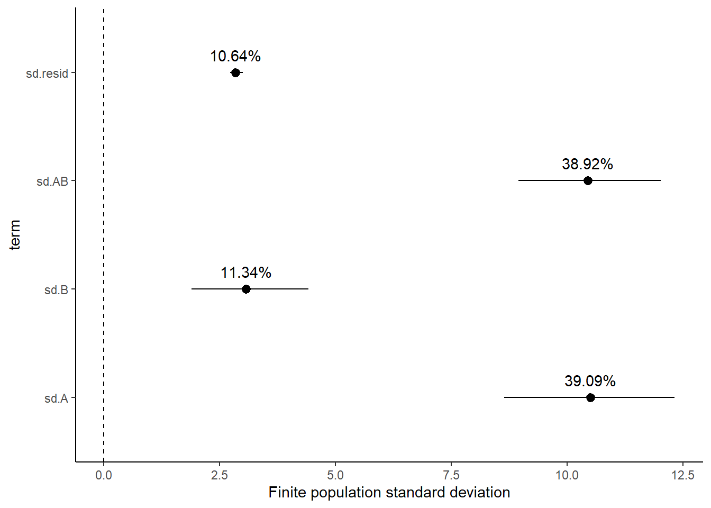
Approximately \(39\)% of the total finite population standard deviation is due to the interaction between factor A and factor B.
R squared
In a frequentist context, the \(R^2\) value is seen as a useful indicator of goodness of fit. Whilst it has long been acknowledged that this measure is not appropriate for comparing models (for such purposes information criterion such as AIC are more appropriate), it is nevertheless useful for estimating the amount (percent) of variance explained by the model. In a frequentist context, \(R^2\) is calculated as the variance in predicted values divided by the variance in the observed (response) values. Unfortunately, this classical formulation does not translate simply into a Bayesian context since the equivalently calculated numerator can be larger than the an equivalently calculated denominator - thereby resulting in an \(R^2\) greater than \(100\)%. Gelman et al. (2019) proposed an alternative formulation in which the denominator comprises the sum of the explained variance and the variance of the residuals.
So in the standard regression model notation of:
\[
y_i \sim \text{Normal}(\boldsymbol X \boldsymbol \beta, \sigma),
\]
NA # A tibble: 1 × 5
NA term estimate std.error conf.low conf.high
NA <chr> <dbl> <dbl> <dbl> <dbl>
NA 1 var1 0.914 0.00791 0.899 0.925
# for comparison with frequentistsummary(lm(y ~ A * B, data))
NA
NA Call:
NA lm(formula = y ~ A * B, data = data)
NA
NA Residuals:
NA Min 1Q Median 3Q Max
NA -6.5694 -1.8517 -0.0589 1.7120 6.5966
NA
NA Coefficients:
NA Estimate Std. Error t value Pr(>|t|)
NA (Intercept) 40.1940 0.8980 44.760 < 2e-16 ***
NA Aa2 14.7163 1.2700 11.588 2.88e-16 ***
NA Bb2 4.9823 1.2700 3.923 0.000249 ***
NA Bb3 -0.3464 1.2700 -0.273 0.786077
NA Aa2:Bb2 -14.5093 1.7960 -8.079 7.37e-11 ***
NA Aa2:Bb3 11.1056 1.7960 6.184 8.65e-08 ***
NA ---
NA Signif. codes: 0 '***' 0.001 '**' 0.01 '*' 0.05 '.' 0.1 ' ' 1
NA
NA Residual standard error: 2.84 on 54 degrees of freedom
NA Multiple R-squared: 0.92, Adjusted R-squared: 0.9125
NA F-statistic: 124.1 on 5 and 54 DF, p-value: < 2.2e-16
Dealing with interactions
In the presence of interactions, conclusions about the main effects are overly simplistic at best and completely inaccurate at worst. Therefore, in the presense of interactions we should attempt to tease the analysis appart a little. In the current working example, we have identified that there is a significant interaction between Factor A and Factor B. Our exploration of the regression coefficients, indicated that the pattern between b1, b2 and b3 might differ between a1 and a2. Similarly, if we consider the coefficients from the perspective of Factor A, we can see that the patterns between a1 and a2 are similar for b1 and b3, yet very different for b2.
At this point, we can then split the two-factor model up into a series of single-factor models, either:
examining the effects of Factor B separately for each level of Factor A (two single-factor models) or
examining the effects of Factor A separately for each level of Factor B (three single-factor models)
However, rather than subset the data and fit isolated smaller models, it is arguably better to treat these explorations as contrasts. As such we could either:
apply specific contrasts to the already fit model
define the specific contrasts and use them to refit the model
We will do the former of these options since we have already fit the global model. For this demonstration, we will explore the effect of factor A at each level of factor B. I will illustrate two ways to perform these contrasts on an already fit model:
By generating the posteriors of the cell means (means of each factor combination) and then manually compare the appropriate columns for specific levels of factor B.
mcmc <-as.matrix(data.rstan)wch =grep("^beta", colnames(mcmc))newdata =expand.grid(A =levels(data$A), B =levels(data$B))Xmat =model.matrix(~A * B, data = newdata)coefs = mcmc[, wch]fit = coefs %*%t(Xmat)head(fit)
NA
NA iterations 1 2 3 4 5 6
NA [1,] 40.23813 54.22655 46.03474 43.25405 39.83888 65.66168
NA [2,] 40.12497 54.77883 45.97137 46.14087 41.20566 66.03308
NA [3,] 39.41360 54.58451 44.89623 46.53916 38.91574 67.85264
NA [4,] 39.94005 53.09550 45.83725 46.14740 39.83076 65.70590
NA [5,] 42.00006 56.47324 45.88027 45.04534 39.16922 64.87701
NA [6,] 39.98753 54.83417 45.72542 47.01548 38.16437 66.75923
## we want to compare columns 2-1, 4-3 and 6-5comps = fit[, c(2, 4, 6)] - fit[, c(1, 3, 5)]tidyMCMC(comps, conf.int =TRUE, conf.method ="HPDinterval")
NA # A tibble: 3 × 5
NA term estimate std.error conf.low conf.high
NA <chr> <dbl> <dbl> <dbl> <dbl>
NA 1 2 14.8 1.33 12.2 17.4
NA 2 4 0.234 1.33 -2.21 2.92
NA 3 6 25.8 1.28 23.3 28.2
By generating the posteriors of the cell means (means of each factor combination) and then manually compare the appropriate columns for specific levels of factor B.
mcmc <-as.matrix(data.rstan)wch =grep("^beta", colnames(mcmc))newdata =expand.grid(A =levels(data$A), B =levels(data$B))Xmat =model.matrix(~A * B, data = newdata)contr =attr(Xmat, "contrasts")newdata.a1 =model.frame(~A * B, expand.grid(A =levels(data$A)[1], B =levels(data$B)),xlev =list(A =levels(data$A), B =levels(data$B)))Xmat.a1 =model.matrix(~A * B, data = newdata.a1, contrasts = contr)newdata.a2 =model.frame(~A * B, expand.grid(A =levels(data$A)[2], B =levels(data$B)),xlev =list(A =levels(data$A), B =levels(data$B)))Xmat.a2 =model.matrix(~A * B, data = newdata.a2, contrasts = contr)Xmat = Xmat.a2 - Xmat.a1coefs = mcmc[, wch]fit = coefs %*%t(Xmat)tidyMCMC(fit, conf.int =TRUE, conf.method ="HPDinterval")
NA # A tibble: 3 × 5
NA term estimate std.error conf.low conf.high
NA <chr> <dbl> <dbl> <dbl> <dbl>
NA 1 1 14.8 1.33 12.2 17.4
NA 2 2 0.234 1.33 -2.21 2.92
NA 3 3 25.8 1.28 23.3 28.2
References
Gelman, Andrew et al. 2005. “Analysis of Variance—Why It Is More Important Than Ever.”The Annals of Statistics 33 (1): 1–53.
Gelman, Andrew, Ben Goodrich, Jonah Gabry, and Aki Vehtari. 2019. “R-Squared for Bayesian Regression Models.”The American Statistician 73 (3): 307–9.
Gelman, Andrew, Daniel Lee, and Jiqiang Guo. 2015. “Stan: A Probabilistic Programming Language for Bayesian Inference and Optimization.”Journal of Educational and Behavioral Statistics 40 (5): 530–43.
Stan Development Team. 2018. “RStan: The R Interface to Stan.”http://mc-stan.org/.
Vehtari, Aki, Andrew Gelman, and Jonah Gabry. 2017. “Practical Bayesian Model Evaluation Using Leave-One-Out Cross-Validation and WAIC.”Statistics and Computing 27 (5): 1413–32.
![]()